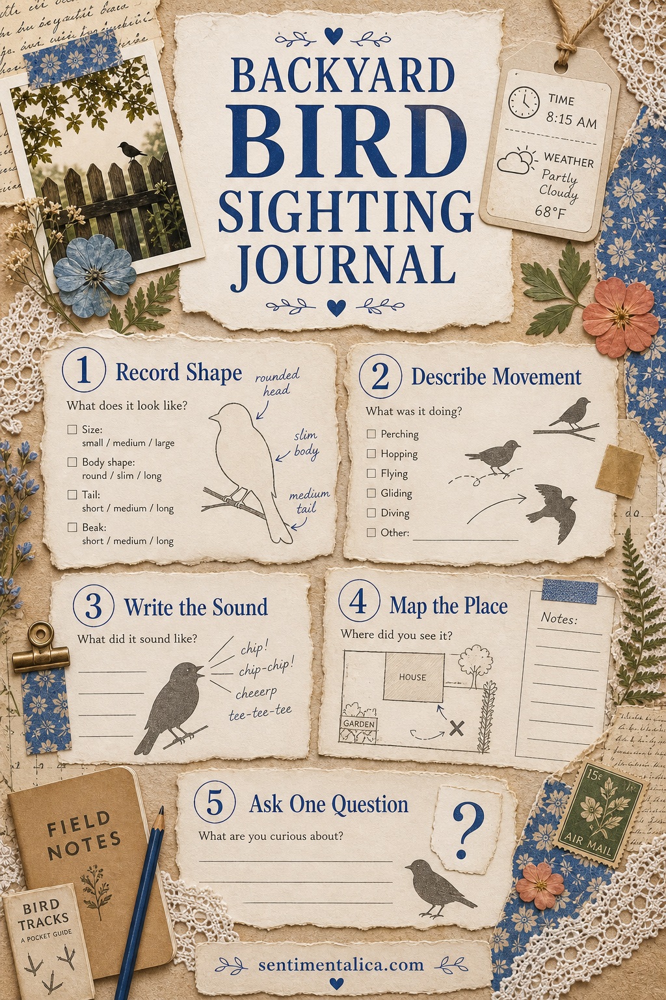
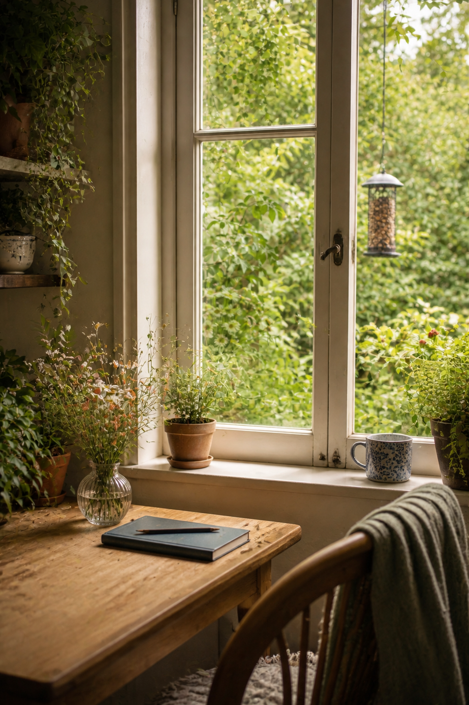

You do not need to know every bird name before keeping a bird journal. In fact, beginning with what you genuinely observe can create better pages: a round silhouette on the fence, three quick hops, a bright note repeated from the hedge.
Choose one familiar viewing place such as a kitchen window, balcony, garden chair, or park bench. Return for ten minutes at roughly the same time. A small repeated practice will teach you more than waiting for a rare perfect sighting.

Record shape before species
Begin with the body outline. Was the bird round or narrow, upright or horizontal, long-tailed or compact? Draw a loose silhouette or write three shape words. This remains useful even when the bird leaves before you identify it.
Notice one proportion: beak length compared with the head, tail compared with the body, or legs compared with the perch. You are training attention, not producing scientific illustration.
Describe movement like a tiny sequence
Write three verbs in order: landed, tilted, pecked. A bird’s movement can distinguish it more clearly than color, especially in shadow. Add an arrow or three quick marks showing the direction it travelled.
If several birds are present, follow one individual for a minute rather than trying to record the whole group.

Write the sound the way you heard it
There is no wrong spelling for a remembered call. Try “chip-chip,” “tea-kettle,” a rising line, or dots spaced according to rhythm. Note whether the sound came from high branches, a hedge, the roof, or somewhere you could not see.
Later, a recording or field guide may help with identification. Keep your original sound note even if the official description is different.
Map the place around the bird
Draw a tiny plan showing the feeder, fence, tree, water, and your viewing position. Mark where the bird arrived and where it disappeared. Over several pages, repeated routes may become visible.
Add weather and light because behavior changes with wind, rain, heat, and time of day. “Cold bright morning” is enough.
Finish with one question
Questions keep the journal open: Why did it carry moss? Does it visit after rain? Was the second bird following it? You do not need to answer immediately. A question gives you something precise to watch for next time.
- Date, time, and weather
- Three shape words
- Three movement verbs
- Your version of the sound
- Where it appeared
- One question for tomorrow
Observation is already valuable before identification arrives.
After a week, compare your notes and add names only where you feel confident. Keep uncertain sightings too. They show how your eye changed, and they may become the pages you most enjoy revisiting.
Find more nature-led memory keeping in the Sentimentalica journal.